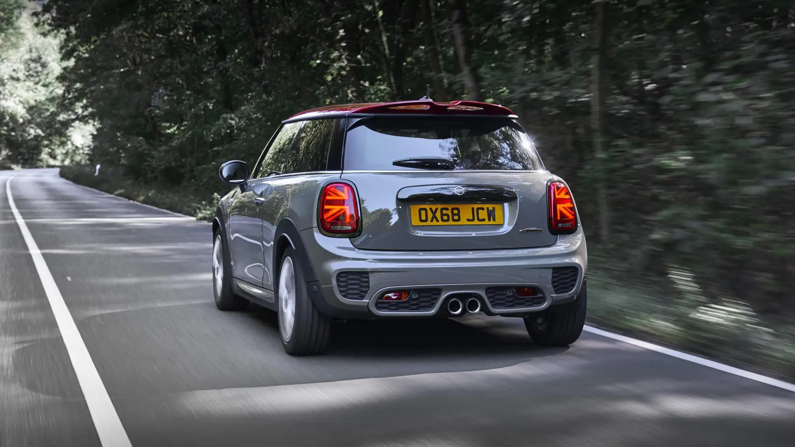
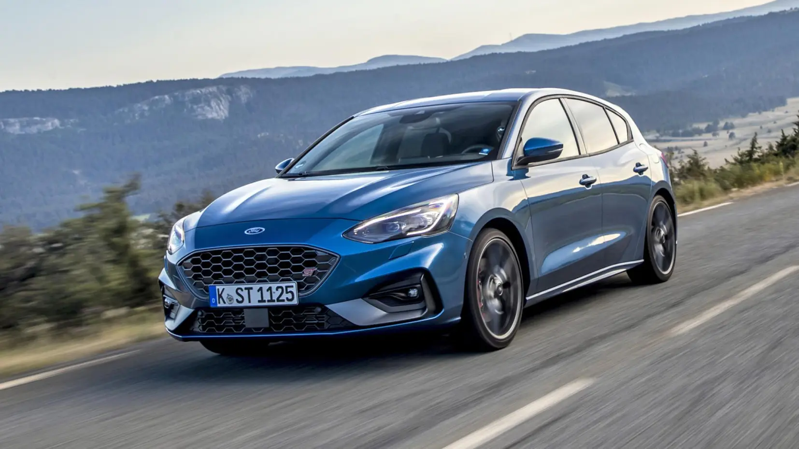

INICIO
Los Mejores Hot Hatches del Año
 El BMW 128ti, con su tracción delantera y un enfoque en la diversión de conducir, se establece como un fuerte competidor en el mercado de los hot hatches, ofreciendo una experiencia dinámica y emocionante al volante.
El BMW 128ti, con su tracción delantera y un enfoque en la diversión de conducir, se establece como un fuerte competidor en el mercado de los hot hatches, ofreciendo una experiencia dinámica y emocionante al volante.
 El Mini John Cooper Works representa el espíritu deportivo en un formato compacto, combinando un diseño icónico con un rendimiento excepcional, lo que lo hace destacar en el segmento de los hot hatches.
Volver al inicio El Ford Focus RS lleva la experiencia de los hot hatches a otro nivel con su tracción integral y su potente motor.
El Mercedes-AMG A35 destaca por su diseño agresivo y su impresionante manejo, que lo convierten en uno de los favoritos de la categoría.
Volver al inicio